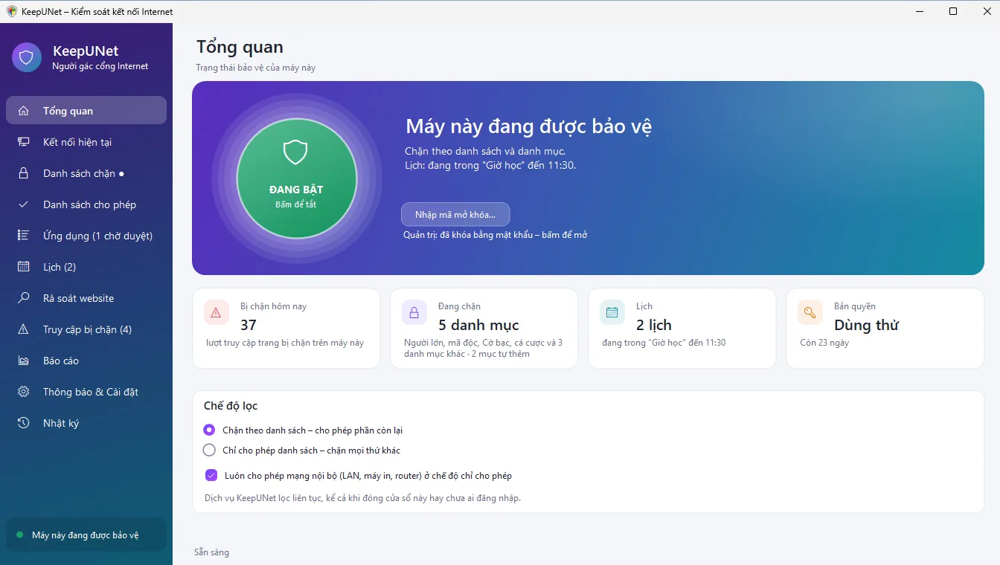
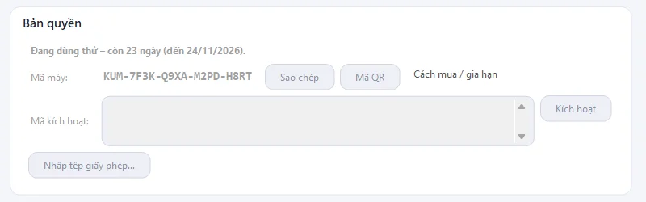

Cập nhật ngày 22/11/2026
Tải KeepUNet-Setup.msi tại keepunet.vn, bấm đúp để cài (nếu Windows SmartScreen cảnh báo, chọn "Thông tin thêm" rồi "Vẫn chạy"), sau đó làm theo trình hướng dẫn: đặt mật khẩu phụ huynh, chọn mẫu theo tuổi con, tạo tài khoản Windows thường cho con. Mất khoảng 5 phút; dùng đủ tính năng 30 ngày, sau đó kích hoạt bằng mã gửi qua Zalo 0987 755 325.
Bài này hướng dẫn từng bước cài KeepUNet trên máy tính Windows 10 hoặc Windows 11 của con, từ lúc tải về tới lúc máy được bảo vệ. Cả quá trình mất khoảng 5 phút. Bạn cần đăng nhập Windows bằng tài khoản có quyền quản trị (thường là tài khoản của bố mẹ).
Bước 1. Tải bộ cài
Bấm Tải KeepUNet cho Windows. Tệp tải về tên KeepUNet-Setup.msi, dung lượng khoảng 900 KB.
Nếu trình duyệt Edge hoặc Chrome báo tệp "ít được tải xuống", bấm vào dấu ba chấm cạnh tệp và chọn Giữ lại (Keep). Đây là cảnh báo chung cho phần mềm mới, chưa nhiều người tải.
Bước 2. Chạy bộ cài
- Bấm đúp vào KeepUNet-Setup.msi.
- Nếu hiện màn hình xanh "Windows đã bảo vệ máy tính của bạn" (SmartScreen): bấm dòng chữ Thông tin thêm (More info), rồi bấm nút Vẫn chạy (Run anyway). Cảnh báo này xuất hiện vì bộ cài chưa có chữ ký số; KeepUNet không chứa quảng cáo hay phần mềm đi kèm.
- Windows hỏi "Bạn có muốn cho phép ứng dụng này thay đổi thiết bị?": chọn Có. KeepUNet cần quyền quản trị để lọc Internet cho mọi tài khoản trên máy.
- Đọc điều khoản, đồng ý và bấm cài đặt. Xong bước này, KeepUNet tự mở trình hướng dẫn thiết lập.
Bước 3. Thiết lập lần đầu (trình hướng dẫn)
- Những gì KeepUNet thay đổi trên máy: đọc qua danh sách thay đổi (DNS, chính sách trình duyệt, tường lửa). Gỡ KeepUNet là mọi thứ trở về như cũ.
- Mật khẩu quản trị: đặt mật khẩu phụ huynh. Muốn tắt bảo vệ, đổi cài đặt hay gỡ phần mềm đều cần mật khẩu này. Hãy chọn mật khẩu con không đoán được, và tạo mã khôi phục phòng khi quên.
- Mẫu cấu hình: chọn theo tuổi của con: Trẻ dưới 10 tuổi, Học sinh 10–15 tuổi, Học sinh 15–18 tuổi hoặc Phòng máy / giờ làm việc. Mẫu bật sẵn các danh mục chặn và lịch phù hợp; sau này bạn chỉnh thêm tuỳ ý.
- Tài khoản Windows cho con: nên cho con dùng tài khoản Windows thường (không phải quản trị). KeepUNet có sẵn nút tạo tài khoản như vậy.
- Mở khoá từ xa bằng điện thoại (không bắt buộc): quét mã QR bằng Google Authenticator hoặc Microsoft Authenticator. Khi con cần mở tạm, bố mẹ đọc mã 6 số trên điện thoại thay vì đưa mật khẩu.
Bấm Hoàn tất. Từ giờ KeepUNet chạy ngầm, bảo vệ mọi tài khoản trên máy, kể cả khi chưa ai đăng nhập.

Bước 4. Kiểm tra nhanh
- Mở trình duyệt, vào thử một trang thuộc danh mục bạn đã chặn: trang chặn của KeepUNet hiện ra thay cho nội dung.
- Mục Truy cập bị chặn ghi lại lần thử đó: thời gian, trang web, trình duyệt.
Mua và kích hoạt bản quyền
Bạn được dùng đầy đủ tính năng 30 ngày. Khi muốn mua hoặc gia hạn:
- Mở KeepUNet → Thông báo & Cài đặt → mục Bản quyền, bấm Cách mua / gia hạn. Mã máy (dạng KUM-XXXX-XXXX-XXXX-XXXX) được sao chép sẵn.
- Gửi mã máy kèm gói muốn mua qua Zalo 0987 755 325 hoặc email l3dhung@gmail.com, rồi chuyển khoản theo hướng dẫn nhận được. Đang dùng thử thì báo thêm số ngày còn lại để hạn gói tính nối tiếp sau ngày hết dùng thử.
- Dán mã kích hoạt nhận được vào ô Mã kích hoạt, bấm Kích hoạt và nhập mật khẩu phụ huynh.

Gỡ cài đặt
Mở KeepUNet → Thông báo & Cài đặt → Gỡ cài đặt KeepUNet… và nhập mật khẩu phụ huynh. Khi gỡ, KeepUNet trả lại DNS gốc, gỡ quy tắc tường lửa và chính sách trình duyệt. Nếu đã đặt mật khẩu, gỡ từ Cài đặt của Windows sẽ không được: đó là cách KeepUNet ngăn con tự gỡ.
Gặp khó khăn?
Nhắn Zalo 0987 755 325, kèm ảnh chụp màn hình chỗ bị vướng. Đừng gửi mật khẩu phụ huynh qua tin nhắn.
Thử KeepUNet trên máy của con
Tải miễn phí, cài trong 5 phút, dùng ngay đầy đủ tính năng. Cần hỗ trợ cứ nhắn Zalo 0987 755 325.